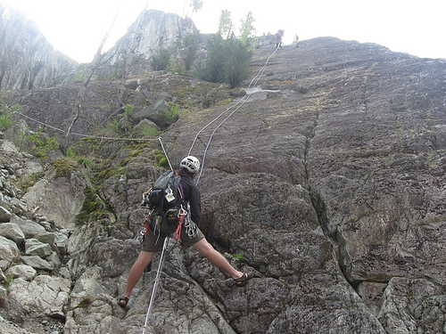
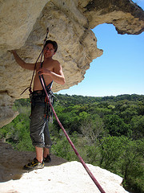

Nudos para escalada
Introducción
La escalada es algo más que un deporte en el que predomina la fuerza física por encima de todos los demás aspectos, psíquicos y fisiológicos. Esto no quiere decir que la fuerza no tenga un papel importante en la escalada, por supuesto que esto no es así, pero antes que la fuerza física se encuentran unos aspectos sobre los que, debemos hacer hincapié.
Estos conceptos básicos son:
Control de la mente por encima de todo
Es de vital importancia. La escalada es un deporte de riesgo. El 50% de los errores que se producen en este deporte son debidos a descontroles y arrebatos causados por el miedo a una caída. Por eso lo primero antes de escalar debemos hacernos un esquema mental donde tengamos los siguientes puntos: autocontrol, serenidad, y consciencia de estar haciendo las cosas correctamente.
Conocer nuestros límites
Conocer nuestras posibilidades. Nunca debemos apurar nuestras fuerzas, porque llega un momento en que no dominamos nuestros músculos. Si no se está seguro de algo hay que decir que no. Esto es de vital importancia, no solo para la escalada sino también en cualquier aspecto de la montaña y de la vida cotidiana.
Conocimiento pleno de las técnicas de escalada
Dominio de las maniobras básicas con la cuerda, saber asegurar correctamente a nuestro compañero, entendimiento con nuestra pareja y conocer técnicas de rápel, es decir técnicas de alpinismo para deslizarse por la cuerda, así como las técnicas básicas del arte de hacer nudos, nos supondrá el escalar sin más preocupaciones que el conseguir progresar y disfrutar de nuestra escalada.
Poseer un material apropiado para nuestras necesidades
"Más vale que sobre que no que falte". Esto no siempre es posible debido al elevado valor del material de escalada, pero sí que hay que tenerlo en cuenta siempre, ya que el salir a escalar puede ser una actividad agradable, pero se puede convertir en el peor día de toda nuestra vida si por falta de material o por un descuido nos encontramos atrapados en medio de la pared. Hay que, tener la cabeza fría y mantener la calma. Si nos encontramos en una situación extrema hay que agudizar el ingenio y tratar de resolverla como buenamente podamos. De nada sirve el agobiarse, tan solo para perder el control. El hombre es capaz de superarse muy por encima de sus posibilidades.
La Técnica
La técnica consiste básicamente de dos grandes grupos de elementos: el movimiento personal y el movimiento de cordada.
En el movimiento personal es imprescindible conservar el equilibrio dentro de la pared (o perderlo a propósito para recuperarlo con rapidez), para lo cual es muy útil:
- Mantener siempre tres puntos de apoyo en la roca.
- No cruzar los pies.
- No perder, en lo posible, la verticalidad del cuerpo.
- Hacer recaer la mayor parte del trabajo en los pies y las piernas. (La escalada es considerada como una continuación de la caminata por lo tanto, el motor principal de movimiento deben ser las piernas).
- Realizar todos los movimientos de una manera estática, es decir, que no sean bruscos o violentos, como aventarse de un apoyo a otro.
En el movimiento de cordada se considera no a un solo